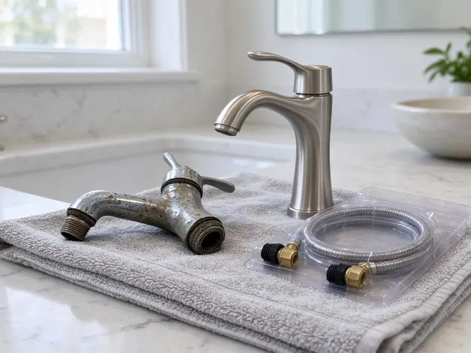

Gas Water Heater Replacement in Fargo, ND
Get hot water back quickly with gas water heater replacement in Fargo, ND, including new flex connectors, expansion tanks and venting checks.
- Fast Tank Swaps
- Major Brands
- Old Heater Haul-Away Free
- Upfront Quotes
Gas Water Heater Leaking? Replace It in Fargo, ND.
Most gas water heater replacements are done in about three hours.
New Gas Water Heaters for Fargo, ND Households
HPN Plumbing sizes each gas water heater to your household, from a 40 gallon tank for a couple to a 75 gallon for a large family. We check draft, gas pressure and the expansion tank. Those checks keep it safe for years.
Some of what we do:
- Drain pan, T&P discharge line and seismic strap upgrades
- Code-Compliant Venting and Gas Line Work
- Licensed and Insured Gas Water Heater Installers

Additional Plumbing Replacement Services in Fargo, ND
When repairs are no longer enough, our replacement services in Fargo, ND deliver modern, efficient equipment installed right.


Customers
Why Choose HPN Plumbing for Gas Water Heater Replacement in Fargo, ND?
Many rural homes get water from private wells or rural water systems, and iron and sulfur odors are common complaints. Sediment settles on the bottom of a gas tank, right over the burner, and overheats the steel. We set up each new heater so the drain valve is easy to reach for a yearly flush and the anode rod can be pulled without moving the tank. That popping noise is sediment.
- Code Knowledge, Our plumbers work to North Dakota building code and local rules for gas appliance installs.
- Draft Testing, We check for gas leaks and confirm the vent drafts to keep carbon monoxide outside.
- Efficiency, A new tank burns less fuel than one that is ten years old and full of sediment.
Citywide Coverage
We serve every neighborhood in Fargo for gas water heater replacement, older parts of town and new subdivisions on the edges alike. Most calls get same-day service. Attic installs take a little longer.
Experienced Team
Each tech at HPN Plumbing can safely shut down, disconnect and cap a gas line, then reconnect and test it to North Dakota code. That is a core skill. Then we follow the manufacturer's specs.
Safety-First Approach
Gas work starts with the shutoff. Every replacement we do meets the fuel gas and venting code adopted in Fargo, ND, and we check combustion air before lighting the burner. Leak testing comes next.
Trusted Certified Fargo Plumbing Services Professionals
At HPN Plumbing, we are proud to offer certified plumbing services throughout Fargo, ND. Credentials matter in this trade. Our plumbers hold recognized industry credentials, and they follow strict safety and quality rules on every repair, installation and maintenance call we run.
Call Us Now PHCC Plumbing Contractor Recognition
PHCC Plumbing Contractor Recognition Better Business Bureau (BBB) Accreditation
Better Business Bureau (BBB) Accreditation Angi Certified Pro
Angi Certified Pro ISO 9001 Quality Management Certification
ISO 9001 Quality Management CertificationGas Tanks We Replace in Fargo, ND
40 and 50 Gallon Tank Replacement in Fargo
Forty and fifty gallon gas tanks are the workhorse in most North Dakota homes, and a leak at the bottom seam means the tank is finished. Newer tanks can run taller than the old one. We measure the closet before ordering. Plan on about two to three hours.

Standard Gas Water Heater Replacement in Fargo
A standard 40 or 50 gallon atmospheric tank is what most homes have, and swapping one like for like is a two to three hour job when the venting and gas line are in good shape. We drain the old tank, cap the gas, and set the new heater on a stand or pan. Every install gets new gas and water connectors. We soap-test the gas joints and check the draft hood with the burner lit.
Tankless Gas Conversion in Fargo
Going tankless usually means a bigger gas line, since a whole-house tankless unit can draw 199,000 BTU against the 40,000 a tank burner uses. The 1/2-inch line feeding a tank is rarely enough. New venting is part of it. We check meter capacity and pipe length before quoting so there are no surprises halfway through the job.
Propane Gas Water Heater Replacement in Fargo, ND
Propane heaters run at about 11 inches of water column instead of the 7 inches typical for natural gas, so the gas valve and orifice have to match the fuel. We never swap a natural gas tank onto propane without the right conversion. We confirm pressure with a manometer.
Bradford White Gas Water Heater Installation in Fargo
Bradford White tanks are sold only through plumbing wholesalers, not big-box stores, and plenty of North Dakota plumbers install them for that reason. Parts are easy to get. We follow their venting and clearance specs to the letter, which keeps the warranty valid.
Commercial Gas Water Heater Service in Fargo, ND
Higher BTU inputs on commercial units mean bigger gas lines and larger vent sizes, plus a permit and inspection in most jurisdictions. We handle all of it. We keep your downtime short.
A.O. Smith Gas Water Heater Service in Fargo
A.O. Smith makes tanks under its own name and also builds the State line, so parts overlap a lot between the two brands. We handle the sizing and the gas connection. Exhaust venting gets checked against their specs.

Commercial Gas Tank Replacement in Fargo
Laundromats and multi-unit buildings work commercial tanks so hard that replacement comes on a predictable schedule rather than as a surprise. We plan the swap around your slow hours. Some jobs need added vent or gas work.
Local Gas Water Heater Replacement in Fargo, ND
Permits and inspections are routine for us in Fargo. We will know quickly if your vent and gas line suit a new tank or need work first. The price is firm before we start.
Local code in Fargo sets the rules for venting and relief valve discharge, and an inspector will check both on the final. We install to pass the first time. We rarely get called back.
HPN Plumbing at a Glance
- Fully licensed plumbing team covering Fargo, ND
- Same-day appointments and 24/7 emergency response
- Clear written estimates, no hidden fees
- 4.9-star rated by 408+ North Dakota customers
Fargo Map
Fargo Information
- Population
- 133,188
- Area codes
- 701/402/218
- Service area
- Fargo and communities within 40 miles
- Nearby
- West Fargo, Horace, Wahpeton, Valley City
Sediment and age wear down gas tanks in Fargo, ND, so a properly installed replacement matters for both comfort and safety.
Expert Services
Call HPN Plumbing for honest, reliable plumbing from people who know the trade in Fargo, ND.
Our Specialized Plumbing Services in Fargo, ND
At HPN Plumbing, we handle the full list of plumbing services across Fargo, ND. We go from leak detection all the way to full system installations, for homes and commercial buildings, and we do it quickly at a fair price. Take a look at our core services below:


Our Gas Water Heater Process in Fargo, ND
Here is what you can expect when you hire HPN Plumbing for your gas water heater replacement in Fargo, ND.
Call Us
Call (701) 403-1348 and tell us your tank size and location. We give you an upfront installed price and a time window.
Remove Old Tank
We shut off gas and water, drain the old heater and haul it away. We check the gas line, venting and shutoff valves.
Install and Light
We set the new tank with straps, new connectors and a drain pan, then leak test and light it. We confirm draft and set a safe, comfortable water temperature.
Frequently Asked Questions About Gas Water Heater Replacement in Fargo
Most gas water heater replacements in Fargo, ND cost $1,200 to $3,500. Tank size and brand set most of it, and gas line or venting upgrades can push it toward the top of that range. You get a written price first.
Flush the tank once a year. Draining a few gallons from the valve at the bottom clears sediment before it hardens, and checking the anode rod every three years tells you when to replace it before the tank starts to rust. A right-sized tank lasts longer.
Gas and venting mistakes are the dangerous part. One loose fitting can leak gas, and a poorly sloped vent can spill carbon monoxide without any obvious sign. Hire a licensed plumber.
A pressure regulator or backflow device leaves heated water nowhere to expand. The expansion tank soaks up the pressure spike and spares the heater.
Atmospheric vent heaters rely on hot exhaust rising up a metal flue on its own. A power vent uses a blower to push exhaust through PVC, so it can exit through a wall and usually runs a little more efficiently. Power vents need an outlet.
It is risky. A gas leak, a bad vent or a misrouted relief line can cause fire or carbon monoxide problems you will not see coming. A licensed plumber also handles the permit.
Banging or popping from the tank means sediment has built up on the bottom. Rusty water, a slow leak or a tank past ten years old are reasons to get it checked before it quits. Better before than after.
Mostly Rheem, State and Bradford White. All three have solid warranties.
What People Are Saying About Our Plumbing Experts?

Megan L.
Our upstairs tub drained so slowly that every shower turned into a bath. HPN Plumbing pulled a wad of hair out of the stopper and then snaked the line past the trap. Three months later it still drains fast.
Drain Cleaning · Fargo, ND
Marcus H.
Grease from the fryer line kept clogging the kitchen drain at my diner. HPN Plumbing hydro jetted the line after closing, showed me the buildup on camera, and set us up on a quarterly cleaning so it does not catch us on a Friday again.
Drain Cleaning · Fargo, ND
Paul B.
Our pit pump ran nonstop even in dry weather. The plumber found the check valve was stuck open, so the same water kept cycling back into the pit. New valve, new float switch, done in an hour. It runs quiet now.
Sump Pump · Wahpeton, NDEmily R.
The shutoff valve under our kitchen sink snapped off in my hand on a Sunday morning. HPN Plumbing had someone out by early afternoon. He replaced both angle stops with quarter turn valves and showed me where our main shutoff was, which I honestly did not know.
Plumbing Repair · Jamestown, ND
Monica A.
Our water bill nearly doubled in one month with no change in how we used water. The tech checked the meter, heard the leak under the hallway with his equipment, and opened a hole about a foot square. Fixed the same day.
Slab Leak Repair · Jamestown, NDRachel N.
Hard water was leaving white crust on every faucet and our dishwasher was struggling. The tech tested the water, recommended a softener sized for a family of five, and installed it with a bypass valve in one afternoon. The spots on our glasses are gone.
Water Softener · Grand Forks, ND